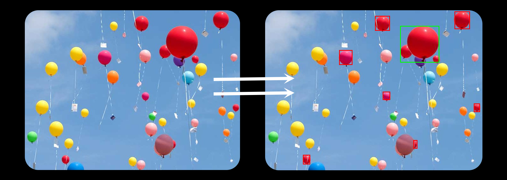
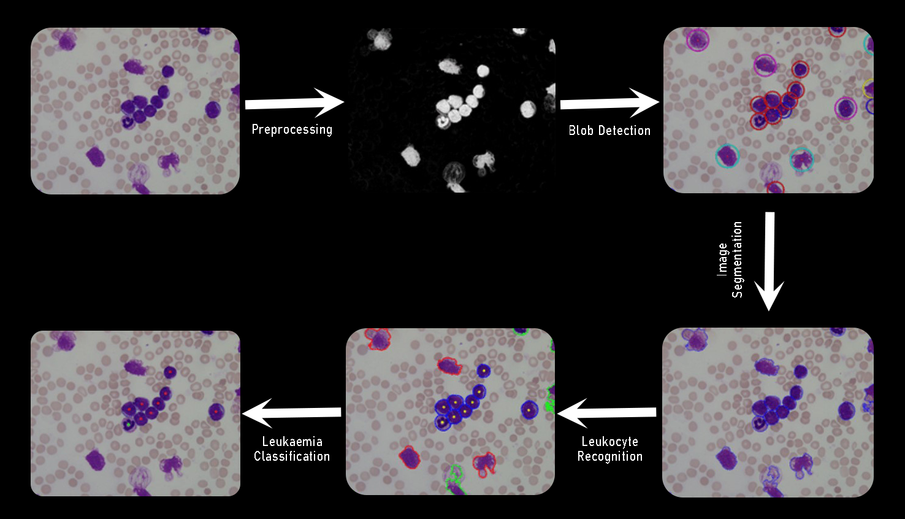

Color Blob Detection
The Color blob Dettecttion program is a Java-based application that allows users to highlight a specific color within an image. The program is designed to identify the largest blob of a given color in an image and generate a new image that highlights this color.

Application process walkthrough
The program uses an algorithm that takes all the pixels of the given color and groups them together in sets. It then compares all the sets to determine the largest set, which represents the largest blob of the given color in the image. Once the largest blob has been identified, the program generates a new image that highlights this blob by outlining it or changing its color.
To use the program, a user would need to input an image file and specify the color to be highlighted. The program would then run the algorithm to identify the largest blob of this color in the image and generate a new image that highlights this blob. The output image could be saved as a separate file or displayed on the screen for further analysis or use. The program could be further developed to include additional features or capabilities, such as the ability to process multiple images at once, or the ability to identify and highlight multiple colors within an image.
Use Cases

The application could be useful for a variety of purposes, such as identifying specific objects in an image, highlighting certain features or patterns, or helping user to identify and analyze data in an image. It could be used by researchers, analysts, designers, or anyone who works with images and wants to isolate and highlight specific features or colors.
Blob detection program can help in In the case of leukemic blood image analysis. It can identify abnormal cells or cell clusters that may be indicative of leukemia. Specifically, the program can detect and analyze the size, shape, and distribution of cells within an image. By analyzing the size and shape of cells within an image, the program can help identify and differentiate normal and abnormal cells. This can be particularly helpful in identifying abnormal cells associated with leukemia, such as immature or abnormal white blood cells. Additionally, by analyzing the distribution of cells within an image, the program can help identify patterns or clusters of cells that may be indicative of cancer.